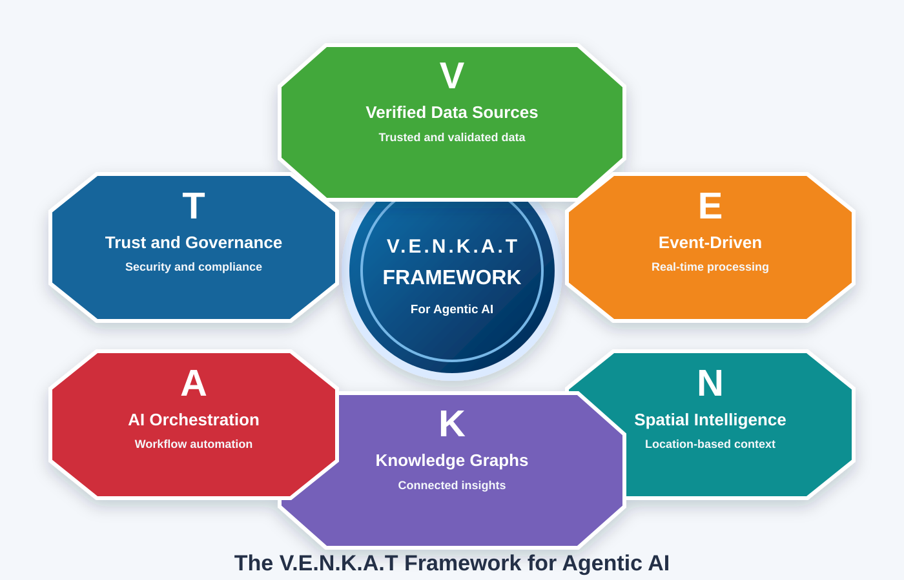
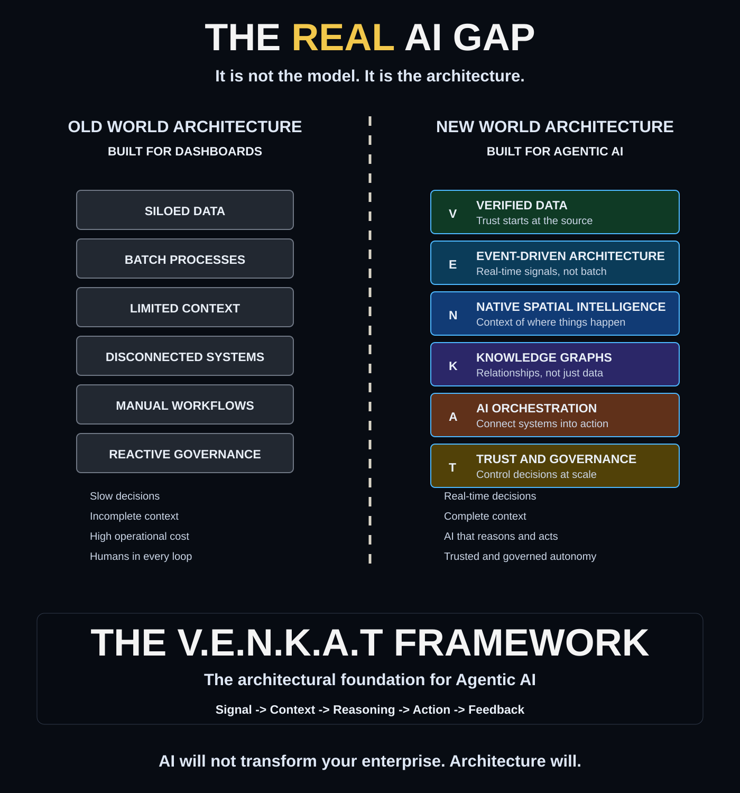

Verified Data
Trusted, validated, observable, governed data that establishes the factual foundation for agentic decisions.
Enterprise Architecture for the Agentic AI Era
A six-layer operating architecture for AI systems that observe trusted signals, understand context, reason over relationships, orchestrate action, and improve through governed feedback.
Core Thesis
Traditional enterprise platforms were optimized for dashboards, reports, and human interpretation. Agentic AI requires trusted data, real-time events, spatial context, connected knowledge, orchestration, and governance so AI can act responsibly at enterprise scale.
Framework

Trusted, validated, observable, governed data that establishes the factual foundation for agentic decisions.
Real-time signals that let AI respond to operational change as it happens instead of waiting for batch cycles.
Location, proximity, movement, network constraints, and geography as first-class reasoning context.
Connected relationships across entities, policies, assets, events, customers, risks, and dependencies.
Agents, tools, APIs, workflows, humans, and systems coordinated into executable business outcomes.
Security, compliance, auditability, explainability, policy enforcement, and accountable control.
Architectural Patterns
Events trigger context enrichment, graph reasoning, agent planning, governed execution, and feedback capture.
Data products, geospatial layers, operational events, and knowledge graph relationships form a shared context layer.
Agents access tools through policy-aware gateways with role controls, approval thresholds, audit logs, and rollback paths.
High-risk actions route to human review while low-risk actions execute automatically within bounded policy limits.
Operational twins evolve from visualization into simulations, recommendations, and orchestrated actions.
Outcomes, exceptions, user overrides, and policy decisions feed back into quality, trust, and performance improvement.
Practitioner & Certification Suite
Master the six layers with structured study material, software labs, a 12-week capstone, knowledge checks, and complementary certifications.
Open study guideFollow the TOGAF ADM-aligned lifecycle, layer playbooks, maturity model, certification workflow, and reassessment rules.
Open practitioner suiteAssess mandatory gates and supporting controls with explicit tests, evidence, scoring, findings, and remediation tracking.
Open control catalogUse copy-ready assurance artifacts and see the 85% rule applied to a worked logistics dispatch example.
Open artifact templatesView logistics pilotWhitepaper
Professional landing page and downloads for the V.E.N.K.A.T Framework whitepaper on enterprise architecture for Agentic AI.
Open whitepaper pagePDF reference material covering how the V.E.N.K.A.T Framework applies to logistics, dispatch, rerouting, customer communication, governance, and feedback.
Open PDFA concise Markdown reference for the six framework layers, operating model, architecture gap, and companion articles.
Open overviewExample Use Cases
A highway closure triggers rerouting, inventory reallocation, customer updates, and governed audit capture within minutes.
View use casePlant and warehouse signals support space optimization, predictive maintenance, worker safety, and automated work orders.
View use caseSmart meter signals, feeder events, topology, EV charging, DER relationships, and orchestration enable controlled load balancing.
View use caseDigital twins move beyond visualization into AI-driven recommendations, simulations, workflow execution, and governance.
View use caseGitHub
Framework overview, adoption guide, TOGAF comparison, articles, and visual assets.
Browse docsReference architecture and framework stack diagrams for agentic AI enterprise systems.
Browse architectureGuidance for contributing ideas, examples, improvements, and framework extensions.
View contributing guideSoftware Mapping
| Layer | Software Categories | Representative Examples | Architecture Role |
|---|---|---|---|
| Verified Data | Data quality, catalogs, lineage, lakehouse, MDM | Databricks, Snowflake, Collibra, Informatica, dbt, Great Expectations | Certify data as trusted, traceable, observable, and governed. |
| Event-Driven Architecture | Streaming, messaging, CDC, event mesh | Kafka, Confluent, Pulsar, Flink, Debezium, Solace | Move from periodic insight to real-time operational awareness. |
| Native Spatial Intelligence | GIS, geospatial analytics, routing, mobility intelligence | Esri ArcGIS, CARTO, Google Maps Platform, HERE, PostGIS, Kepler.gl | Add where, proximity, route, terrain, service area, and network context. |
| Knowledge Graphs | Graph databases, ontology management, semantic layers | Neo4j, Amazon Neptune, Stardog, TigerGraph, RDFox | Represent relationships, dependencies, policies, and enterprise meaning. |
| AI Orchestration | Agent frameworks, workflow engines, API gateways, automation | LangGraph, Semantic Kernel, AutoGen, Temporal, Airflow, Camunda, MuleSoft | Coordinate agents, tools, workflows, systems, and human checkpoints. |
| Trust & Governance | IAM, policy, audit, risk, monitoring, AI governance | Okta, Azure AD, Open Policy Agent, ServiceNow GRC, Arize, LangSmith | Control who can act, what can execute, and how decisions are audited. |
Comparison Report

Strong for enterprise architecture governance across business, data, application, and technology domains. V.E.N.K.A.T adds the agentic execution lens: signal, context, reasoning, action, and feedback.
Strong for data management, quality, lineage, stewardship, and metadata. V.E.N.K.A.T extends trusted data into event response, spatial intelligence, graph reasoning, and orchestration.
Strong for decentralized data ownership and data products. V.E.N.K.A.T shows how agents consume those products, interpret context, coordinate actions, and remain governed.
Strong for migration, platform operations, security, and cloud maturity. V.E.N.K.A.T defines the enterprise AI architecture required after cloud foundations are in place.
Benefits
Challenges
Publications
Presentations
Use the framework visuals, architecture gap diagram, and enterprise layer chart in presentations and workshops.
Open presentation resourcesReusable SVG graphics covering the six layers, enterprise-scale value flow, and the architecture gap.
View visual assetsDownloads
Download the logistics-focused V.E.N.K.A.T Framework whitepaper.
Download PDFDownload the main V.E.N.K.A.T Framework diagram as an SVG asset.
Download SVGDownload the six-layer enterprise architecture visual as an SVG asset.
Download SVGDownload the old-world versus agentic AI architecture comparison visual.
Download SVGCommunity
Use the contact form to prepare a message, connect through the Medium profile, or leave feedback below to collect thoughts locally before a discussion.
Community Feedback
Comments are powered by GitHub Issues through utterances. Visitors sign in with GitHub, and each page discussion is stored as an issue in this repository.
If the comment box does not appear, install the utterances GitHub App for this repository and confirm Issues are enabled.
{kind=link}
{kind=link}
{kind=link}